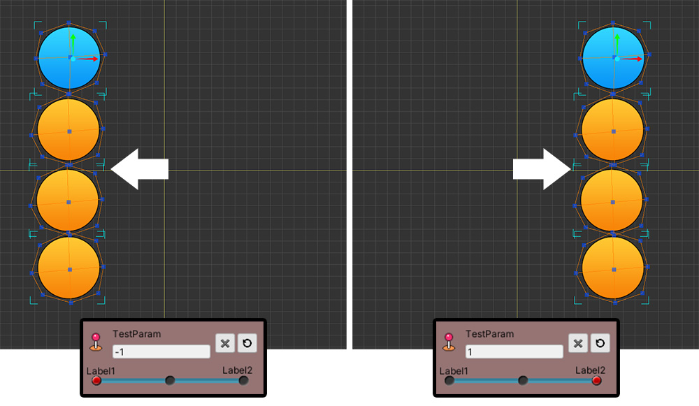
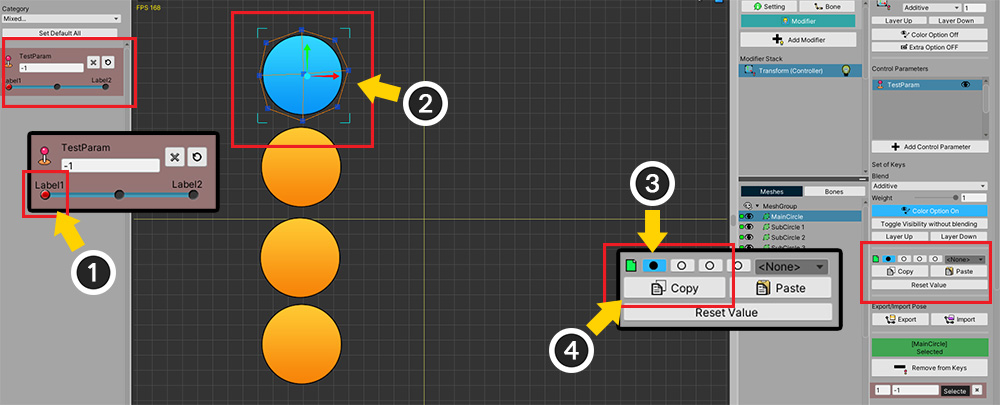
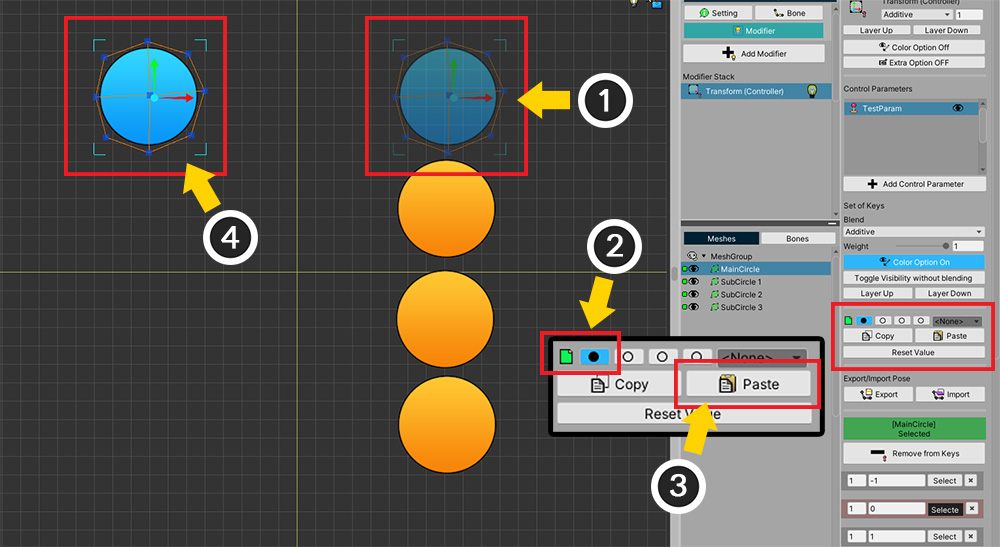

AnyPortrait > マニュアル > スロットを使用してコピー/貼り付け
スロットを使用してコピー/貼り付け
1.3.0
制御パラメータを利用するモディファイヤを使用するとき、2つ以上のキー（Key）での値を合わせた結果を作成する場合があります。
例えば、「左に向かう姿」と「上に向かう姿」を合わせ、「左上に向かう姿」を作成する場合です。
このページでは、2つ以上のキー値をコピーするために、「スロット（Slot）」を利用する方法を説明します。
参考
この機能は、制御パラメータを利用するモディファイヤのみサポートされます。

「Transform（Controller）」モディファイヤを使用した簡単な例を構成してみました。
(1) メッシュが「左下」にあります。
(2) 「Vector2」タイプの制御パラメータでメッシュの位置を制御します。
コントロールパラメータも「左下」を基準にします。

制御パラメータに合わせてメッシュが「左上」と「右下」に位置するようにしました。
つまり、メッシュは、制御パラメータに基づいて、「上（+Y）」で動かしたり、「右（+X）」に移動します。

(1) 「左上（+Y）」、「右下（+X）」の位置の値を合成して、 (2) 「右上（+XY）」にメッシュが位置するように作られてみましょう。

コピー/貼り付けをする前に、一度新しいキー（Key）を追加します。
(1) 右上部に制御パラメータのスライダーを配置します。
(2) キーを生成します。

二つのキー値（+Yと+X）をコピーして貼り付けてみましょう。
(1) まず、「左上（+Y）」で制御パラメータを移動します。
(2) このキーでは、メッシュが基準位置から「上（+Y）」に移動します。
(3) 「最初のスロット」を選択します。
(4) 「Copy」ボタンを押して、メッシュの位置をスロットに格納します。

スロットに保存する上記のようにボタンの形が「空のワン」で「塗られたワン」に変わります。

同じ方法で第二の値もコピーしましょう。
(1) 制御パラメータを「右下（+X）」に移動します。
(2) 「第二のスロット」を選択します。
(3) 「Copy」ボタンを押して値をスロットに保存します。
今保存された二つの値を合わせて貼り付けます。
(1) 先に新たに作成したキーを選択します。
(2) 「最初のスロット」を選択します。（ クリック ）
(3) 「第二スロット」を追加で選択します。（ Ctrl+クリック ）
（Macでは Command+クリック ）
(4) 二つのスロットが選択された。
- 青スロット : 「クリック」と、他のスロットの選択が解除され、クリックしたスロットのみを選択します。「Copy」ボタンを押すと、このスロットに格納されます。
- 紫スロット : 「Ctrl +クリック」すれば、さらにスロットが選択され、この時のボタンの色は紫色になります。
- 最大4つのスロットを選択することができます。

(5) 値をどのように合成するかを選択することができます。まず、「Sum」方式を選択してみましょう。

(6) 「Paste」ボタンを押します。
(7) 二つの値が合わさって、「右上」に移動し、メッシュを見ることができます。
つまり、「+X」と「+Y」が合わさって、「+XY」の位置にメッシュが移動した結果です。

(1) 今回は、「Average」方式を選択し、 (2) 「Paste」ボタンを押してみましょう。
(3) メッシュが中に位置することを見ることができます。
「+X」と「+Y」の平均位置に移動したものです。
複数のオブジェクトの値を同時にコピーする
1.3.2
AnyPortrait v1.3.2では、複数のオブジェクトを選択した後、それぞれに対応するモディファイヤの値を同時にスロットに保存してコピーすることができます。
ただし、この機能は、「一つのオブジェクトを選択」するときとは別に動作するので、以下の説明を読むことをお勧めします。

説明のために上記のような例を用意しました。
「1つの青色のメッシュ」と「3つのオレンジ色のメッシュ」があります。
「Transform（Controller）」モディファイヤが登録されており、「制御パラメータ」に3つのキー（Key）が生成された状態です。

モディファイヤに登録された「制御パラメータ」の3つのキー（Key）の二つのキーでメッシュは、それぞれ左、右に移動します。

スロットに値を保存して、コピーする機能は、「1つのオブジェクト」を対象にしたときと、「複数のオブジェクト」を対象にしたときに、それぞれ独立して動作します。
まず、「1つのオブジェクト」を対象に値を保存してみましょう。
(1) メッシュが「左」に移動するように制御パラメータの値を変更します。
(2) 「青メッシュ」のみを選択します。
(3) 「最初のスロット」を選択します。
(4) 「Copyボタン」を押して、「メッシュが左に移動する状態」を保存します。

今度は逆に「複数のオブジェクト」を対象に値を保存してみましょう。
(1) メッシュが「右」に移動するように制御パラメータの値を変更します。
(2) 今回は青メッシュを含めて「すべてのメッシュに」を選択します。
(3) 「最初のスロット」を選択します。
(4) 「Copyボタン」を押して、「メッシュが右に移動する状態」を保存します。

保存された値を適用してみ違いを確認してみましょう。
(1) コピーされた値を適用するために、制御パラメータの値を変更します。
(2) 「すべてのメッシュに」を選択します。
(3) 「最初のスロット」が選択された状態で、 (4) 「Pasteボタン」を押します。
(5) メッシュが「右」に移動することを見ることができます。
複数のメッシュが選択された状態で、「Pasteボタン」を押すと、「複数のメッシュが選択された状態で、保存された値」が適用されるからです。

(1) 逆に「青メッシュ」だけ選んでみましょう。
(2) 同様に、「最初のスロット」を選択し、 (3) 「Pasteボタン」を押します。
(4) 今回は青メッシュが「左」に移動することを見ることができます。
一つのオブジェクトが選択された状態では、「一つのメッシュが選択された状態で、保存された値」が適用されます。
上記の内容を整理すると、次のとおりです。
- 「一つのオブジェクトを選択した場合」と「複数のオブジェクトを選択した場合」のどちらの場合に区分して、値が格納されます。
- 「一つのオブジェクトを選択した場合」に保存された値は、他のオブジェクトにも可能な適用できます。
- 「複数のオブジェクトを選択した場合」は、保存された値は、そのオブジェクトにのみ適用されます。
- 「複数のオブジェクトを選択した場合」にもスロットの値をマージして適用することが可能です。